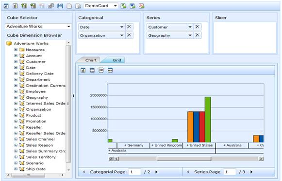

This feature enables the user to view large records by breaking them into smaller segments.
Paging support facilitates the user with the following features:
· Enable/Disable Pager
· Categorical Pager
· Series Pager
· Pager Option Dialog
Use Case Scenarios
Paging support helps the user to view data in larger dimension by breaking the data into pages.
Example: Sales data of a company which has larger dimension of data can be viewed as pages using this feature.
The following screen shot shows OlapClient with paging support enabled:

Figure 45 OlapClient with Pager Enabled
Properties
Table 15: Properties Table
|
Property |
Description |
Type |
Data Type |
Reference links |
|
EnablePaging |
Allows user to enable/disable paging |
Server Side |
bool |
- |
|
OlapPager |
Contains the pager instance |
Server Side |
OlapPager |
- |
Sample Link
A sample is available at the following location:
..\Syncfusion\EssentialStudio\<VersionNumber>\BI\Web\OlapClient.Web\Samples\3.5\Paging\Paging Demo
Adding Paging Support to an Application
Paging can be enabled by setting the “EnablePaging” property as true before calling the DataBind() method.
The following code snippets enables paging:
|
[CS] this.OlapClient1.EnablePaging = true; this.OlapClient1.DataBind(); |
|
[VB] Me.OlapClient1.EnablePaging = True Me.OlapClient1.DataBind() |